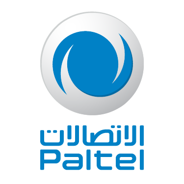
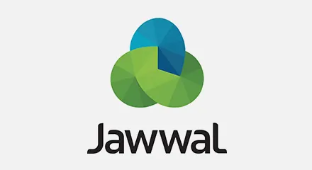

Operators & Today
A small number of companies have shaped internet and mobile access in Palestine. The main operators are shown below.
The companies

Paltel
Fixed lines and fibre

Jawwal
The first mobile operator
Ooredoo
The second mobile operator
Internet access today
About 88.6% of people were online by early 2024. Access has improved in stages: 3G reached the West Bank in 2018, and a 4G upgrade was approved in 2026.